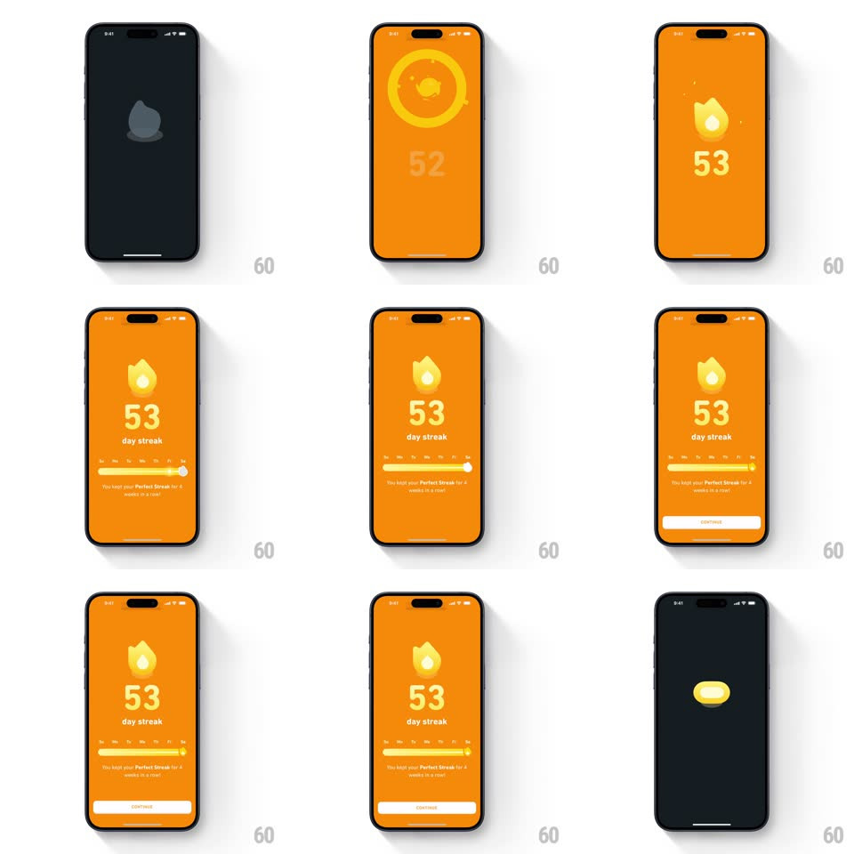

Media
Frame-by-frame

Rebuild this animation 1:1: Duolingo's 53-day streak celebration - a spinning vortex sucks the grey flame into an orange screen, the flame ignites over a rolling 52-to-53 counter, and the week bar slides in with its milestone copy.

Rebuild this animation 1:1: Duolingo's 53-day streak celebration - a spinning vortex sucks the grey flame into an orange screen, the flame ignites over a rolling 52-to-53 counter, and the week bar slides in with its milestone copy. ## Integration Integration: stack-agnostic spec - springs given as stiffness/damping, timed motions as duration + curve; map every value to your framework and animation library of choice. ## Scene Dark screen with a grey flame, then a full orange field: a yellow ring vortex, the ignited flame over "53" and "day streak", a weekly progress bar (Mo-Su dots with a streak flame marker), the copy "You kept your Perfect Streak in 4 weeks in a row!", and a CONTINUE pill. ## Motion spec Pattern: vortex ignition celebration, ~2s. - Vortex: a yellow ring spins up around the grey flame (accelerating, 400ms) as the background wipes to orange through the ring (expanding circle mask, 350ms). - Ignite: the flame scales in (spring ~400/16, 400ms) with two spark pops. - Counter: the number rolls 52 -> 53 (digit slide, 300ms) and pops (scale 1.15 -> 1, spring ~420/18); "day streak" fades in. - Bar: the week bar slides up (spring ~320/24, 350ms), its fill sweeping to the current day (350ms) and the flame marker hopping onto its notch (spring ~400/16). - Copy and CONTINUE fade up staggered (200ms each, +100ms apart). ## Calibration - The vortex is the transition - it is what turns the screen orange. - Orange field, yellow ring, white type: no other colors. ## Reduced motion Crossfade to the final state (300ms). ## Don't miss - The counter roll and the flame pop land on the same beat. - The week bar's marker hop happens after the fill sweep, not during.